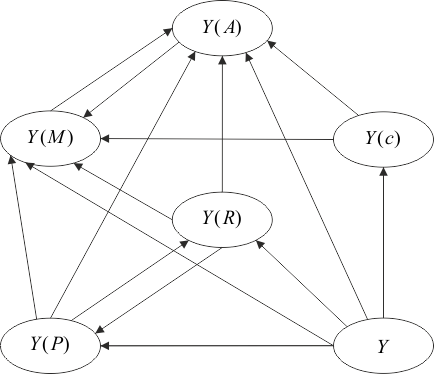

Диаграмма на рисунке 1.13 дает полную информацию о возможности трансляции одного класса схем в другой.

Рис. 1.13 – Диаграмма взаимной трансляции схем
Классы имеют следующие обозначения:
Диаграмма показывает, что классы и являются универсальными в том смысле, что схемы всех других классов транслируемы в них. В то же время в класс не транслируются схемы ни одного другого класса.